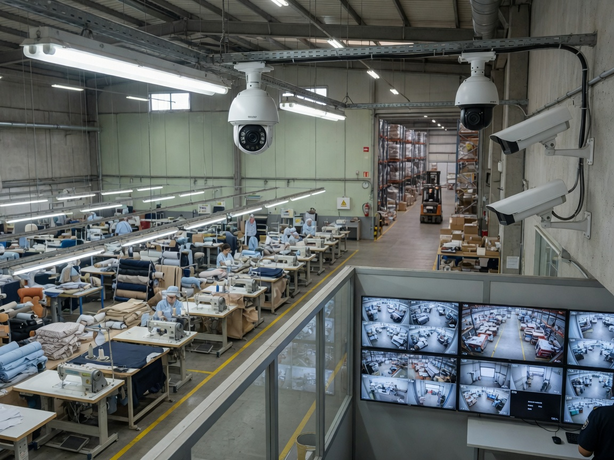

Lindungi aset dan properti bisnis Anda dengan sistem keamanan terintegrasi — CCTV IP, access control, alarm, dan monitoring jarak jauh 24/7 dari smartphone.
Keamanan fisik adalah investasi penting untuk melindungi aset, karyawan, dan operasional bisnis. Creative Network merancang sistem CCTV yang tepat untuk layout bangunan Anda — memastikan setiap sudut kritis terpantau dengan gambar jernih.
Kami tidak hanya memasang kamera, tetapi juga mengintegrasikan sistem keamanan secara menyeluruh termasuk access control, alarm, dan monitoring mobile.
Pengawasan area produksi, gudang, dan pintu masuk keluar.
Monitoring kasir, display, dan pencegahan shoplifting.
Keamanan rumah tinggal, cluster, dan komplek perumahan.
Penentuan titik kamera, blind spot analysis, dan rekomendasi tipe kamera.
Pemasangan indoor/outdoor, pengkabelan POE, dan weatherproof housing.
Konfigurasi NVR/DVR, jadwal rekaman, motion detection, dan retensi data.
Setup aplikasi mobile (Hik-Connect, Scati, iVMS, dll.) untuk monitoring jarak jauh.
Kamera dengan infrared untuk pengawasan malam hari hingga 30–50 meter.
Door lock, fingerprint reader, kartu akses HID/ZKTeco, dan log aktivitas.
Integrasi CCTV ke infrastruktur jaringan existing atau baru.
Pelatihan penggunaan sistem untuk admin dan security team.
Toko kecil, rumah, atau kantor dengan 4 titik kamera.
Kantor menengah, pabrik kecil, 8 titik kamera.
Pabrik, gedung besar, 16+ kamera + access control.
10 merek & standar keamanan — jelajahi interaktif per kategori.

Instalasi CCTV IP di kantor pemerintahan desa: coverage ruang pelayanan, arsip, parkir, dan pintu masuk balai desa. Dilengkapi monitoring dari aplikasi mobile untuk perangkat desa.
Identifikasi titik kritis, blind spot, dan kebutuhan coverage.
Jumlah kamera, resolusi, storage, dan diagram layout.
Pemasangan kamera, kabel POE, NVR, dan konfigurasi.
Demo sistem, setup mobile app, dan serah terima dokumentasi.
Dapatkan penawaran sistem CCTV & keamanan yang disesuaikan dengan lokasi Anda.